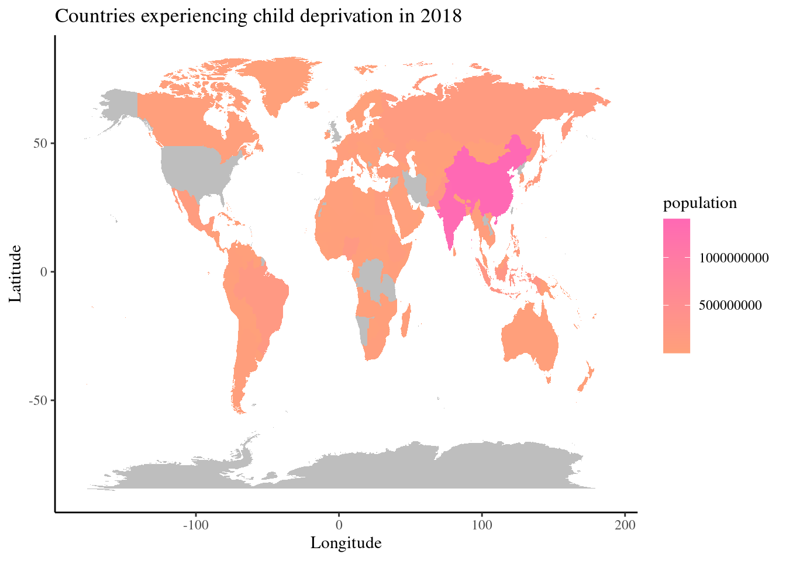

From Cradle to Economy unveiling the dynamics of Child Deprivation
Welcome to the From Cradle to Economy dashboard, a comprehensive visualisation that delves into the intricate relationship between child deprivation and economic factors. This dashboard aims to provide a nuanced understanding of the challenges faced by children in various domains, exploring how economic circumstances intersect with and impact their well-being. Through a series of interactive charts and graphs, presents a data-driven narrative that sheds light on the multifaceted aspects of child deprivation, offering valuable insights for policymakers, researchers, and advocates seeking to address these critical issues. Navigate this analytical journey through the intricate dynamics shaping the early experiences of children and their connection to broader economic realities. For the purpose of this review there is an in depth focus on the transition of child deprivation from 2011 to 2018.
A Global View
In this visualisation depicting child deprivation across the globe in 2018, darker shades signify those countries with higher population numbers and enduring hardship. The map serves as a poignant reminder of the significant populations of children grappling with various forms of deprivation, encompassing poverty, limited access to education, healthcare, and essential resources. This visualisation underscores the imperative for concerted global efforts to ensure the well-being and future prospects of every child, regardless of their geographical location.
Exploring Life Expectancy Trends
This time series presentation unveils the fluctuating life expectancy trends spanning from 1960 to 2020 within nations grappling with child deprivation. By analysing this historical data, we gain profound insights into the intersecting dynamics between child well-being and population health over the past six decades. The visualisation illuminates the impact of socioeconomic disparities, healthcare access, and policy interventions on life expectancy within communities facing child deprivation. This visualisation serves as a critical tool in shaping informed strategies and fostering collective action towards achieving equitable health outcomes for all, irrespective of socioeconomic circumstances.
Comparative Analysis: Child Deprivation in 2011 versus 2018
The bar chart for 2011 provides a focused view of the spread of child deprivation across only four specific countries. As we navigate through this comprehensive visual representation, it is evident that the level of child deprivation across all four countries was fairly similar.
Fast forward to 2018, the transition showcases the increase in the spread of child deprivation to fourteen countries. Each bar represents a specific country, and the height of the bar indicates the percentage of child deprivation.
By comparing the bar charts, we can identify trends and shifts in child deprivation rates. The countries from 2011 are no longer key areas of child deprivation however the spread had increased dramatically across many other regions. Clusters of bars with similar heights may indicate shared challenges or successes within specific geographical areas. By juxtaposing the bar charts from 2011 to 2018, this dashboard unfolds a story of change, persistence, and the ongoing battle against child deprivation.
Exploring the Relationship between Child Deprivation and Life Expectancy
The scatterplot presented in the dashboard offers a distinct visual representation of the relationship between life expectancy and the level of child deprivation in each affected country in 2018.
Positive Correlation: upon initial observation, a discernible trend emerges, indicating a positive correlation between life expectancy and the level of child deprivation. Countries with higher life expectancies tend to exhibit lower levels of child deprivation, while those with lower life expectancies face higher rates of deprivation among children.
Regional Disparities: Clusters of points reveal regional disparities in both life expectancy and child deprivation. This highlights the influence of socio-economic, political, and environmental factors within specific geographical areas, underscoring the complex interplay between these variables.
Concluding Insights: Bridging Child Deprivation and Economic Realities
The From Cradle to Economy dashboard offers a comprehensive exploration of the relationship between child deprivation and economic factors. Through interactive visualisations, it highlights global challenges and the intersection of economic circumstances with child well-being. From the stark depiction of global deprivation to nuanced analyses of life expectancy trends, each visualisation deepens our understanding of this critical issue. The transition from 2011 to 2018 reveals a persistent struggle against child deprivation, emphasising the need for targeted interventions and global collaboration. The scatterplot underscores the positive correlation between life expectancy and child deprivation, driven by socio-economic, political, and environmental factors. This dashboard is a valuable resource for policymakers, researchers, and advocates, offering insights to inform interventions and foster efforts for every child’s well-being, regardless of socio-economic status.